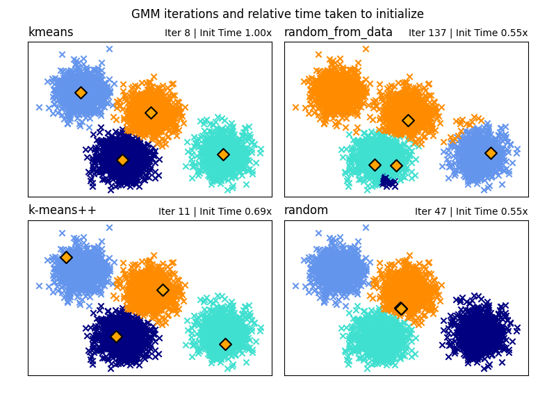

Note
Go to the end to download the full example code or to run this example in your browser via Binder
GMM Initialization Methods¶
Examples of the different methods of initialization in Gaussian Mixture Models
See Gaussian mixture models for more information on the estimator.
Here we generate some sample data with four easy to identify clusters. The purpose of this example is to show the four different methods for the initialization parameter init_param.
The four initializations are kmeans (default), random, random_from_data and k-means++.
Orange diamonds represent the initialization centers for the gmm generated by the init_param. The rest of the data is represented as crosses and the colouring represents the eventual associated classification after the GMM has finished.
The numbers in the top right of each subplot represent the number of iterations taken for the GaussianMixture to converge and the relative time taken for the initialization part of the algorithm to run. The shorter initialization times tend to have a greater number of iterations to converge.
The initialization time is the ratio of the time taken for that method versus the time taken for the default kmeans method. As you can see all three alternative methods take less time to initialize when compared to kmeans.
In this example, when initialized with random_from_data or random the model takes more iterations to converge. Here k-means++ does a good job of both low time to initialize and low number of GaussianMixture iterations to converge.
# Author: Gordon Walsh <gordon.p.walsh@gmail.com>
# Data generation code from Jake Vanderplas <vanderplas@astro.washington.edu>
from timeit import default_timer as timer
import matplotlib.pyplot as plt
import numpy as np
from sklearn.datasets._samples_generator import make_blobs
from sklearn.mixture import GaussianMixture
from sklearn.utils.extmath import row_norms
print(__doc__)
# Generate some data
X, y_true = make_blobs(n_samples=4000, centers=4, cluster_std=0.60, random_state=0)
X = X[:, ::-1]
n_samples = 4000
n_components = 4
x_squared_norms = row_norms(X, squared=True)
def get_initial_means(X, init_params, r):
# Run a GaussianMixture with max_iter=0 to output the initialization means
gmm = GaussianMixture(
n_components=4, init_params=init_params, tol=1e-9, max_iter=0, random_state=r
).fit(X)
return gmm.means_
methods = ["kmeans", "random_from_data", "k-means++", "random"]
colors = ["navy", "turquoise", "cornflowerblue", "darkorange"]
times_init = {}
relative_times = {}
plt.figure(figsize=(4 * len(methods) // 2, 6))
plt.subplots_adjust(
bottom=0.1, top=0.9, hspace=0.15, wspace=0.05, left=0.05, right=0.95
)
for n, method in enumerate(methods):
r = np.random.RandomState(seed=1234)
plt.subplot(2, len(methods) // 2, n + 1)
start = timer()
ini = get_initial_means(X, method, r)
end = timer()
init_time = end - start
gmm = GaussianMixture(
n_components=4, means_init=ini, tol=1e-9, max_iter=2000, random_state=r
).fit(X)
times_init[method] = init_time
for i, color in enumerate(colors):
data = X[gmm.predict(X) == i]
plt.scatter(data[:, 0], data[:, 1], color=color, marker="x")
plt.scatter(
ini[:, 0], ini[:, 1], s=75, marker="D", c="orange", lw=1.5, edgecolors="black"
)
relative_times[method] = times_init[method] / times_init[methods[0]]
plt.xticks(())
plt.yticks(())
plt.title(method, loc="left", fontsize=12)
plt.title(
"Iter %i | Init Time %.2fx" % (gmm.n_iter_, relative_times[method]),
loc="right",
fontsize=10,
)
plt.suptitle("GMM iterations and relative time taken to initialize")
plt.show()
Total running time of the script: (0 minutes 0.498 seconds)